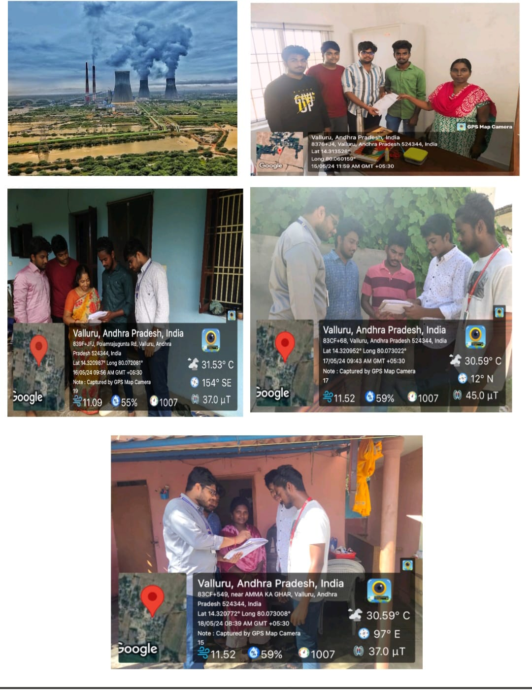

Detailed Report:
On day 1:
- Performed a survey on the awareness of plantation. Selected an area near to my place of living and started the survey.
On day 2:
- Continued the survey and focused on the following:
- The awareness of the various places where there was pollution.
- Questioned about the government plans to reduce plantation.
- Questioned about the various measures taken by the people to maintain a clean environment.
- Gathered information on the person's daily routine.
On day 3:
- Visited the houses in the villages and saw some trees which are in bad condition.
On day 4:
- Met the village people and explained about the "COMMUNITY SERVICE PROJECT".
- Created awareness about the uses of tree plantation.
On day 5:
- Continued my awareness program in the area and did the following:
- Gave suggestions about the present environment and its status.
- Explained what are the good habits in maintaining good health.
- Explained health and habits.
- Suggested a daily routine which includes various methods to reduce pollution.
